整體節奏一覽
機票
| 去程（🌼：經新加坡） | 航班 | 時間 | 金額 |
|---|---|---|---|
| TPE → SIN | 酷航 TR875 | 00:10 → 出發 | NT$8,453 |
| SIN → KBV | 酷航 TR682 | 10:55 → 11:45 | |
| 於新加坡樟宜機場管制區轉機約 6 小時，不需入境新加坡。 | |||
| 去程（😈：經曼谷） | 航班 | 時間 | 金額 |
|---|---|---|---|
| PVG → BKK | 泰越捷 | 02:30 → 06:30 | NT$10,171 |
| BKK → KBV | 泰越捷 | 09:00 → 10:30 | |
| 在曼谷轉機約 2.5 小時，屬於「國際轉國內」，😈會在此清泰國海關（入境登記在 BKK 完成）。 | |||
| 國內線 12/29 | 航班 | 時間 | 金額 |
|---|---|---|---|
| KBV → BKK | 泰航 | 12:45 → 14:10 | NT$5,010（含行李） |
每人 4–5 段航班，是三個方案中航班最多的。
旅遊風格
安達曼海島＋曼谷都會玩樂＋河畔跨年。12 月是安達曼海最平靜、最清澈的季節，活動也最多元：跳島、攀岩、翡翠池、虎窟寺，加上曼谷玩樂日。
👍 強項
- 三個方案中海最美：安達曼海 12 月風平浪靜、海水清澈
- 風景最獨特：石灰岩海崖、萊雷海灘、皮皮島瑪雅灣
- 12/25 中午就到甲米，奧南住 4 晚，萊雷可以玩一整天
- 活動最多元：跳島、攀岩、翡翠池、虎窟寺、曼谷玩樂日
- 全程只住 2 間飯店
👎 劣勢
- 兩人都要搭紅眼班機，12/24 晚上在飛機和機場過夜
- 最貴，每人 4 段航班
- 😈要一個人在曼谷轉機，並在甲米機場等約 1 小時
- 戶外行程多，12/27–28 需要早起、需要體力
每日規劃
Railay West Beach
兩側被高聳石灰岩懸崖環抱的沙灘，長尾船整齊停靠岸邊，是甲米地區最具代表性的畫面之一。
必看：沙灘上一整排彩色長尾船、懸崖攀岩者的身影
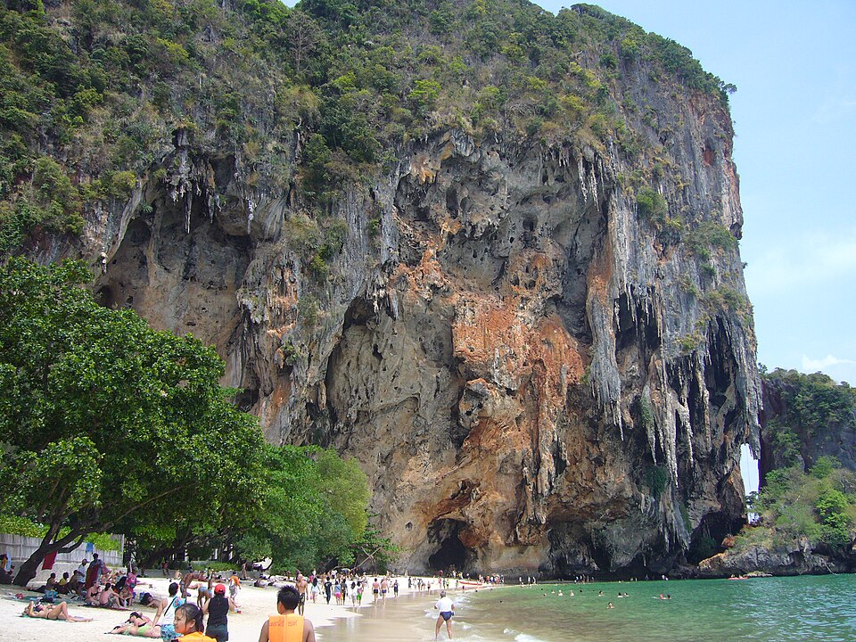
Phra Nang Cave Beach
巨大懸崖下方的海蝕洞穴沙灘，鐘乳石垂掛，海水清澈可直接下水游泳，是甲米最美的海灘之一。
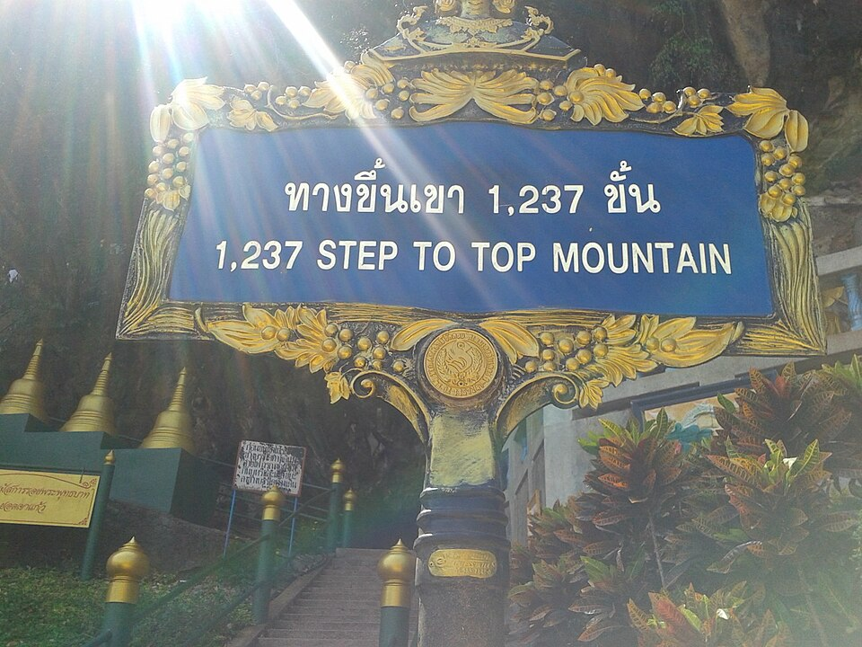
Wat Tham Suea 虎窟寺
需爬 1,237 階石階攻頂 309 公尺山峰，山頂為修行寺院，沿途風景與挑戰性兼具，是這天最需要體力的行程。
必看：「1,237 STEP TO TOP MOUNTAIN」入口告示牌、山頂俯瞰甲米全景
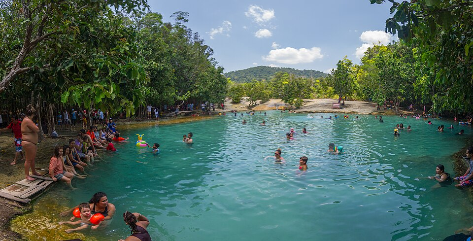
Sa Morakot 翡翠池
叢林深處由溫泉水源形成的天然泳池，水色呈現罕見的翡翠綠，可直接下水消暑，外國成人門票約 200–400 THB。
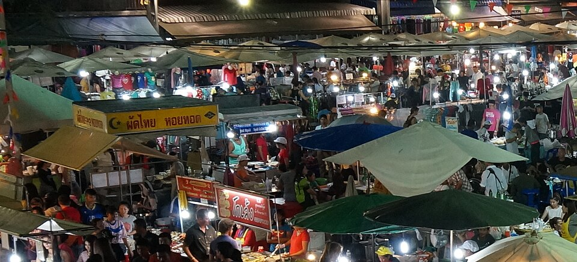
Krabi Town Weekend Walking Street
僅週五至週日限定的步行街夜市，在地小吃、現場表演，感受甲米鎮的日常生活氣息。
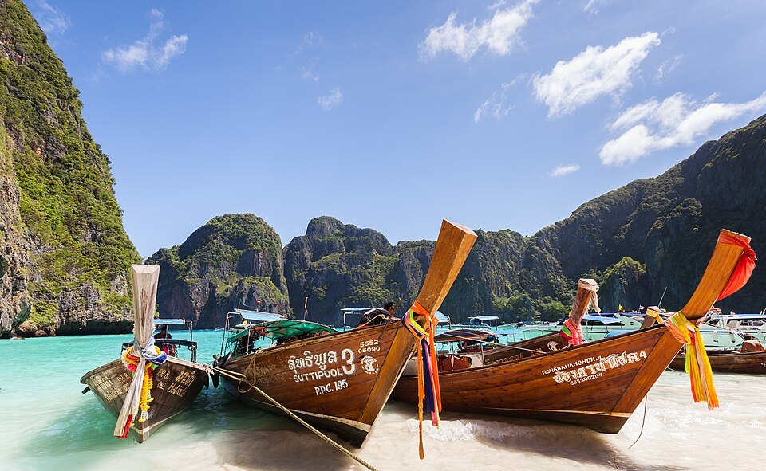
Maya Bay 瑪雅灣
電影《海灘》拍攝地，三面陡峭石灰岩懸崖環抱的白沙海灣，是這趟旅程最具代表性的畫面。目前為生態保育禁止下水游泳。
必看：環繞海灣的垂直懸崖、長尾船一字排開停靠沙灘
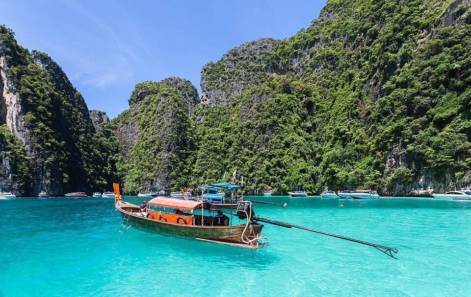
Pileh Lagoon 皮萊潟湖
四面被高聳懸崖包圍的封閉潟湖，海水呈夢幻的祖母綠色，是皮皮島跳島團的浮潛重頭戲。

Ao Nang Beach 清晨
告別甲米前的最後一段海灘時光，晨光下的長尾船剪影格外寧靜。
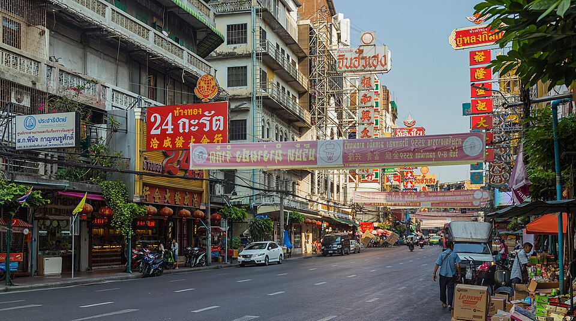
Yaowarat 中國城
曼谷最熱鬧的夜間美食街，霓虹招牌林立。
必吃：T&K Seafood、胡椒豬肚湯麵
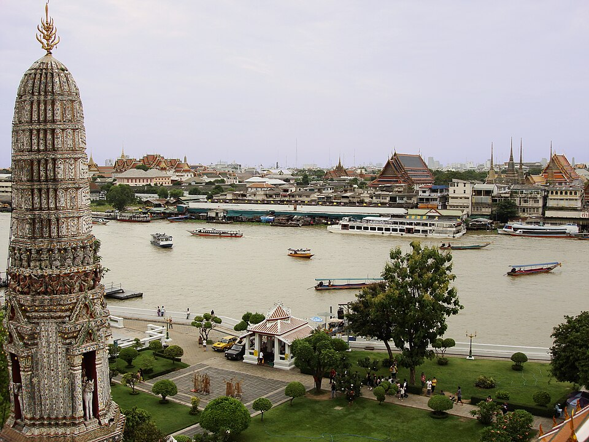
Wat Arun 鄭王廟
昭披耶河畔的瓷片鑲嵌高塔，是情侶泰服寫真的熱門景點。
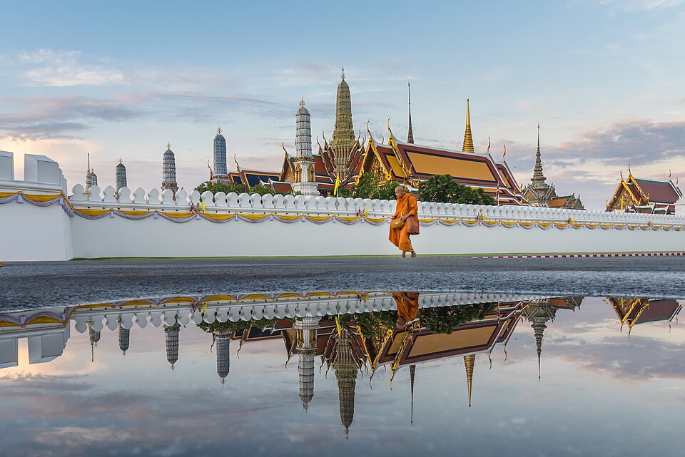
大皇宮・玉佛寺
泰國最重要的皇家建築群，建議一早開門就到避開人潮與高溫。

昭披耶河跨年煙火
午夜時分沿河兩岸多處同步施放煙火，是曼谷跨年最具代表性的畫面。

Go-Ang Pratunam 水門雞飯
在地人氣海南雞飯名店，雞肉滑嫩、醬汁香氣足。
必吃餐廳
甲米（奧南 / 萊雷 / 甲米鎮）
午餐 遊客必吃：The Kitchen by Matoy（冬蔭功、蝦餅）｜在地必吃：Kodam Kitchen
晚餐 遊客必吃：Lae Lay Grill（崖景燒烤）｜在地必吃：Krabi Town 週末夜市 / Chao Fa 碼頭市場（南泰小吃、海鮮、烤魷魚）
小吃 奧南海鮮街、Kaeng Tai Pla（南泰咖哩）、泰式煎餅
曼谷
午餐 遊客必吃：Thipsamai｜在地必吃：Go-Ang Pratunam 水門雞飯
晚餐 遊客必吃：Jay Fai（米其林一星）｜在地必吃：Krua Apsorn
小吃 Yaowarat 中國城、K.Panich 芒果糯米飯
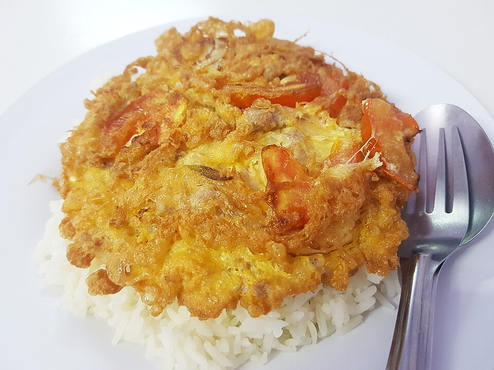
Jay Fai 蟹肉蛋煎
米其林一星路邊攤，招牌蟹肉煎蛋外酥內軟，鋪滿整碗白飯。
建議體驗活動
行程節奏
最硬的兩天（12/27 虎窟寺＋翡翠池、12/28 跳島團）之後緊接最輕鬆的移動日（12/29），讓身體有喘息空間再進入曼谷段。
補眠
中強
最強
最強
移動日休息
中強
跨年高峰
輕鬆收尾
預算（兩人合計，新台幣）
| 項目 | 最低 | 最高 |
|---|---|---|
| 機票 | 45,500 | 80,000 |
| 住宿（8 晚） | 18,000 | 56,000 |
| 當地交通 | 4,000 | 8,000 |
| 餐飲 | 10,000 | 30,000 |
| 門票活動 | 10,000 | 30,000 |
| 雜支 | 4,000 | 12,000 |
| 合計 | 91,500 | 216,000 |
天氣與節慶
甲米 23–32°C，海水約 28°C，偶有短暫陣雨，需準備珊瑚礁友善防曬乳、防磨衣、防水袋。12 月是安達曼海最佳季節（平穩清澈，適合跳島與浮潛）。
住宿
奧南（4 晚）
| 價位 | 飯店 | 特色 |
|---|---|---|
| 高 | Centara Grand Beach Resort & Villas | 私人海灣、船運接駁，US$127 起 |
| 中高 | Avani Ao Nang Cliff | — |
| 中價 | Centara Ao Nang Beach Resort | — |
| 平價 | 奧南海灘三星飯店 | NT$1,500–2,500 |
曼谷（4 晚）
同其他方案，建議河濱區，便於跨年看煙火。
當地交通
| 路段 | 方式 | 時間／費用 |
|---|---|---|
| 機場 → 奧南 | 計程車（固定價） | 550–700 THB/車，25–40 分 |
| 機場 → 奧南 | 共乘小巴 | 150–200 THB/人，40–60 分 |
| 奧南 → 萊雷 | 長尾船 | 100 THB/人，15 分（晚間較貴） |
| 奧南 → 虎窟寺／翡翠池 | 包車 | 1,500–2,500 THB/天 |
| 曼谷市區 | BTS / MRT / 渡輪 / Grab | 依距離 |
入境與實用資訊
- 台灣護照免簽 30 天（2026-09-15 起由 60 天縮短為 30 天）；中國護照互惠免簽 30 天
- 需於入境前 72 小時內完成 泰國數位入境卡（TDAC），官方網站 tdac.immigration.go.th，注意坊間付費假網站
- 🌼在甲米入境泰國（經新加坡轉機，不入境新加坡）；😈在曼谷入境泰國（國際轉國內轉機），兩人 TDAC 需分別填寫各自實際入境的航班與機場
- 島嶼跳島團、長尾船、國家公園門票多以現金支付
- 務必確認旅遊保險有涵蓋水上活動與攀岩
- 建議出發前 30 分鐘服用暈船藥，或選擇雙體船以降低暈船機率
有空檔可以去
甲米
Ao Nang Landmark 夜市
每日營業，現場音樂、傳統舞蹈、泰拳示範與多國美食。

Chao Fa 碼頭夜市
甲米鎮每日營業的碼頭夜市，平價海鮮與在地小吃。

四島／Hong Island 跳島團
半日行程，懸崖環繞的潟湖秘境，未包含在主行程中。
Klong Root / Crystal River 透明獨木舟
清澈見底的河流，可見魚群悠游其中。

Ao Thalane 紅樹林獨木舟
石灰岩峽谷與紅樹林間划船，可見食蟹獼猴與翠鳥。
Khao Ngon Nak 龍脊山健行
著名的陡峭健行步道，可俯瞰整片海岸線。

Tubkaek Beach
奧南以北的安靜海灘，人少、日落視野佳。

Railay East 酒吧
雷鬼風酒吧與火舞表演，夜晚氣氛熱鬧。
奧南海灘路酒吧
海灘路沿岸的酒吧街，適合傍晚後小酌。
曼谷
Chang Chui 創意市集
飛機殘骸改建的文創市集，夜晚有現場音樂（週三公休）。
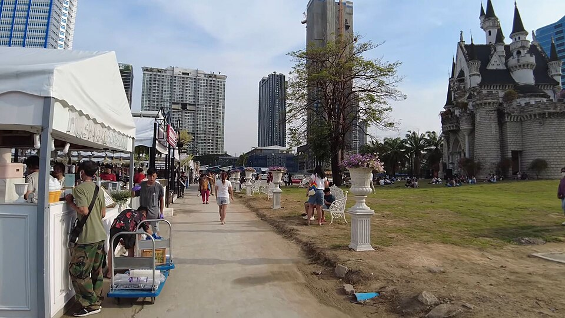
Jodd Fairs Ratchada
新式夜市，貨櫃風格加上美食與啤酒攤位。

Train Night Market Ratchada
復古主題夜市，古董車、老物與美食小吃。

Asiatique
河濱改建倉庫商場，摩天輪與河景餐廳。
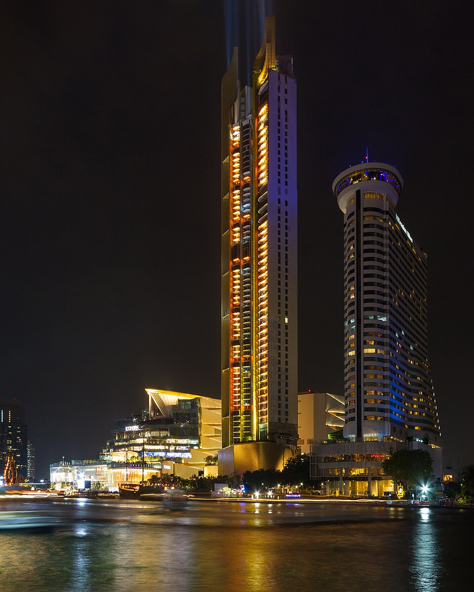
ICONSIAM
昭披耶河畔大型商場，夜晚燈光與河景相映成趣。

Jim Thompson House
美國實業家的泰式木造老宅博物館，展示泰絲工藝。
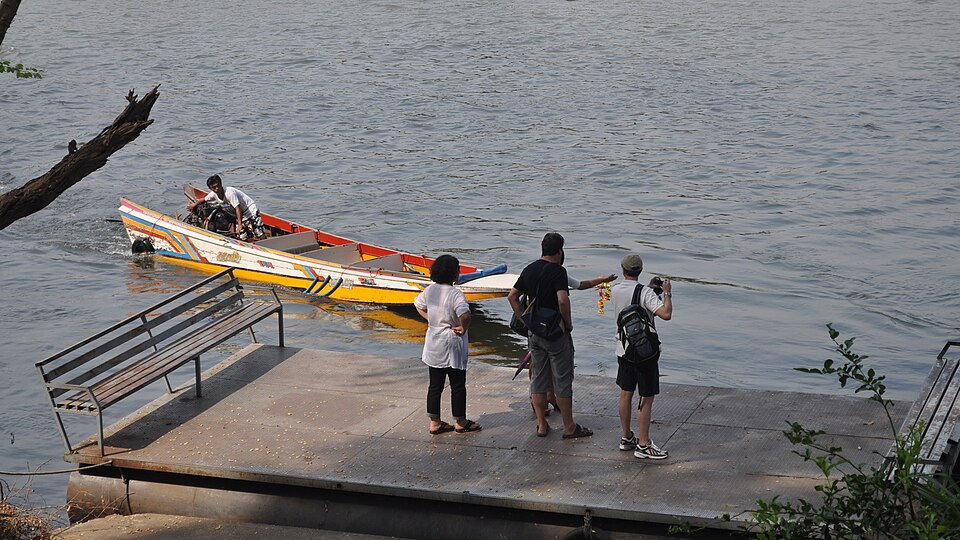
Thonburi 運河長尾船
穿梭曼谷後花園般的運河水巷，體驗在地水上生活風貌。

Khao San Road
背包客聚集的不夜街，便宜小吃與酒吧。

天台酒吧
曼谷高空酒吧文化的代表夜生活，可俯瞰整座城市燈火。